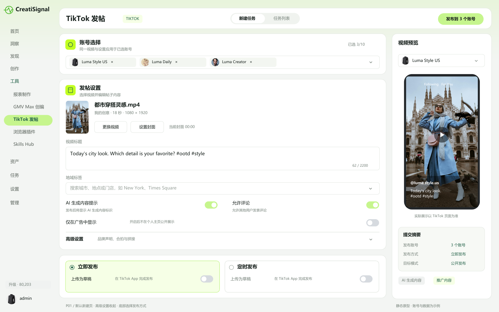
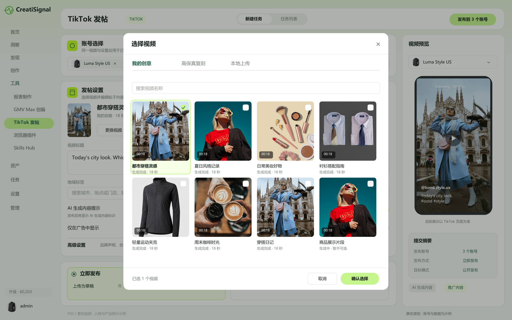
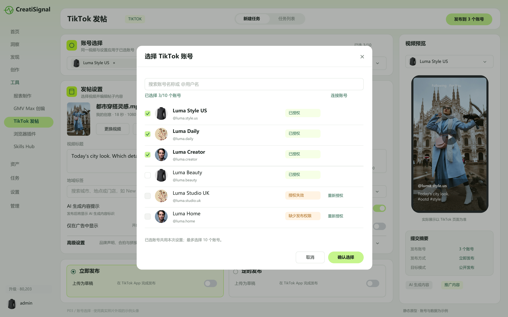
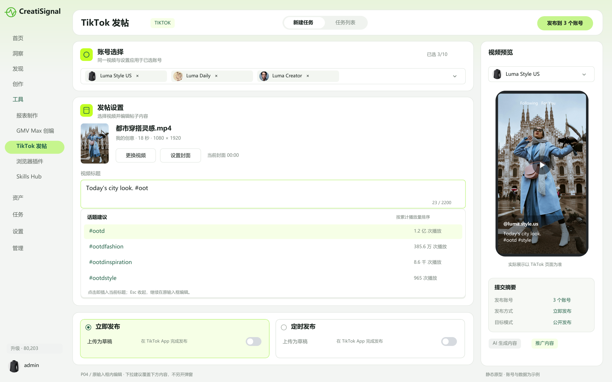
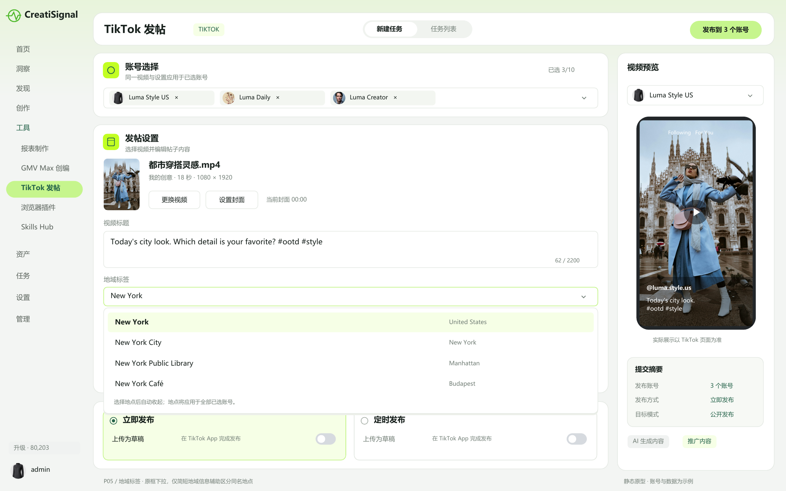
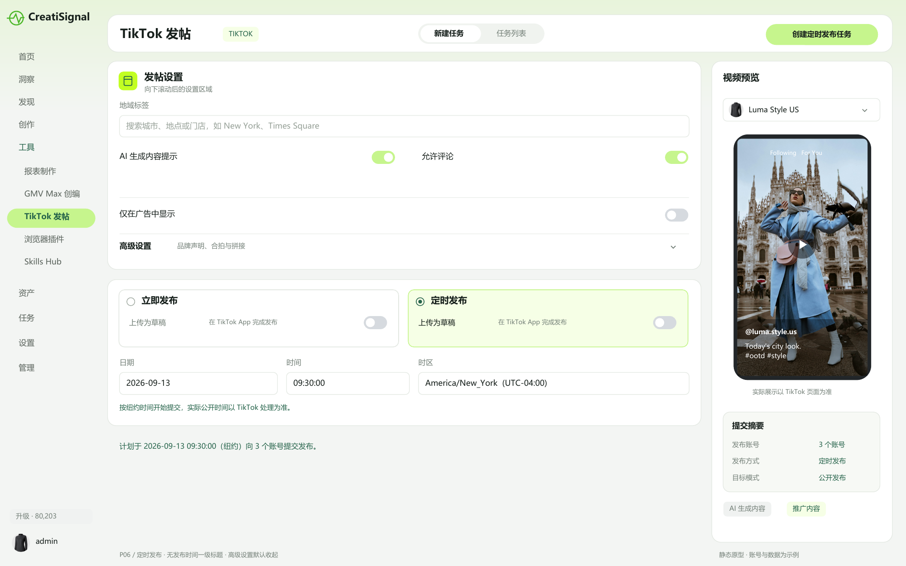
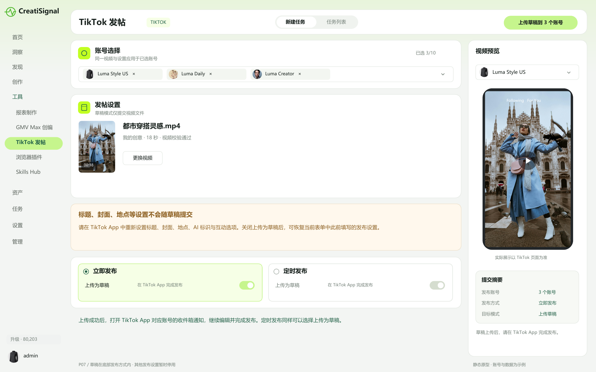
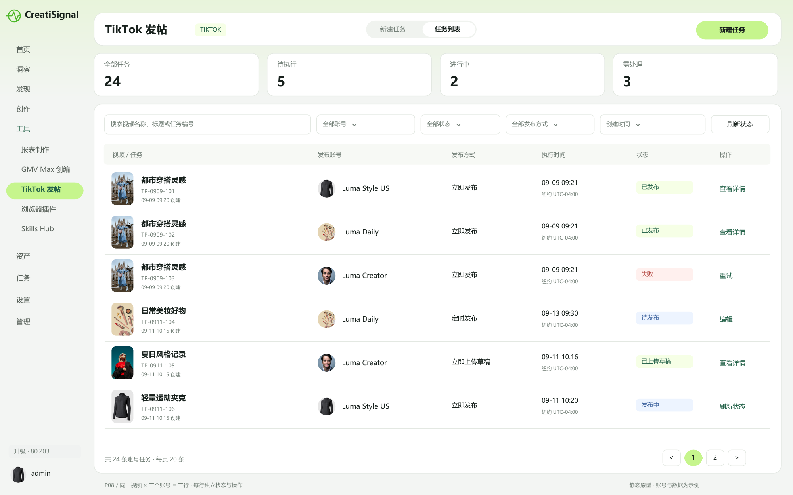
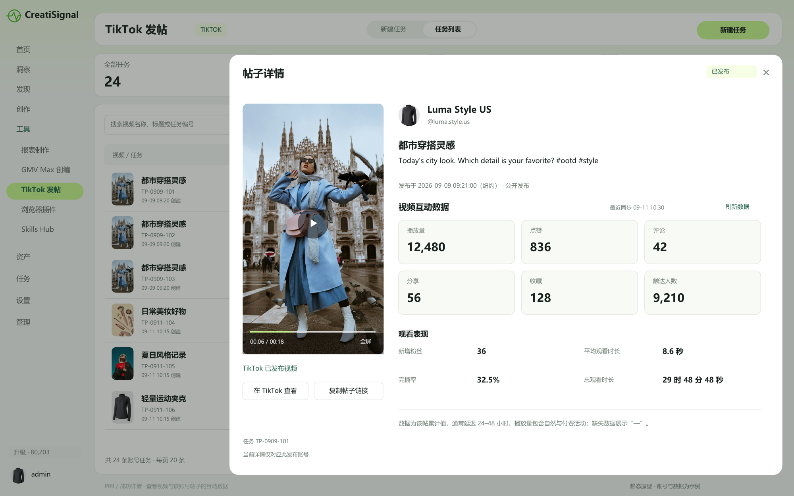
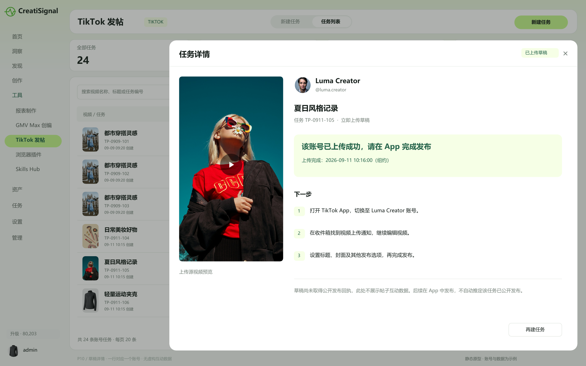

P01 新建任务 默认页面
“发帖设置”替代“基础设置”；标题和地点直接在表单中操作。高级设置默认收起，草稿开关随底部发布方式展示。

P02 选择视频 照片素材示例
保留素材选择弹窗；使用人物与产品照片区分素材，单选，未完成素材不可选。

P03 选择账号 产品与人物头像
多选最多 10 个账号；头像不再使用字母占位。授权异常仍在账号选择器内明确提示。

P04 视频标题 输入框下方话题建议
标题直接输入；输入 # 触发原输入框下方建议，选择后插入文案，不出现编辑弹窗。

P05 选择地点 原输入框下拉
在地域标签输入框内搜索，下方直接展示地点选项；以地点名称为主，不打开地址列表弹窗。

P06 页面底部 定时发布
不设置“发布时间”一级标题；底部直接呈现立即发布与定时发布，选中定时后展开日期、时分秒和时区。高级设置保持收起。

P07 立即发布中的上传为草稿
草稿开关位于当前发布方式内。开启后提交动作变为上传草稿，有效设置与结果提示同步变化。

P08 任务列表 每个账号独立一行
同一视频发布到三个账号，显示三行独立任务。发布账号列仅显示头像与名称；封面使用人物和产品照片。

P09 发布成功 视频与互动数据详情
点击一条成功记录查看该账号的已发布视频和数据。播放量包含自然与付费活动，数据区明确最近同步时间与延迟说明。

P10 草稿详情 单账号上传结果
草稿详情只对应当前账号；展示源视频预览和 App 后续操作，不展示尚不存在的帖子互动数据。
